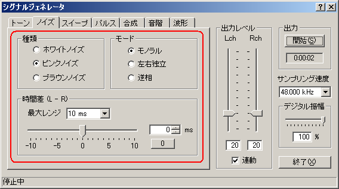
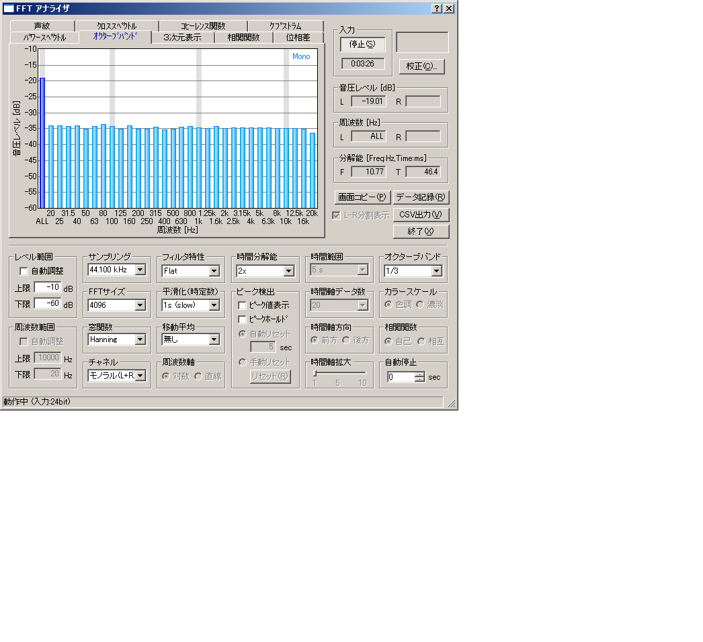

DSSF3 > RA > 操作マニュアル > 測定前の調整
D/A の周波数特性を測定
シグナルジェネレータでピンクノイズを発生させてFFTアナライザで1/3オクターブ分析を行います。


このグラフは、D/Aコンバータの周波数特性を表しています。周波数帯域ごとの音圧レベルの値が同じであれば、フラットに表示されます。上の図では周波数帯域ごとの音圧レベルの差を見やすくするために、縦軸を-10から-60dB表示に拡大してあります。ここで、0dBは信号の最大値を表します。一般的には1kHzのレベルを基準にして、各周波数のレベルが-3dBまでであれば許容範囲です。
パソコンは測定器として使用しますが、同時にパソコンはオーディオセットでもあります。マイクを持った騒音計にもなります。CDやDVDも装備しています。そのため、パソコンでの測定は、すべての装備の性能を測定しているともいえます。逆に「パソコンの測定が正確にできれば、すべての測定ができる」といえます。正確な測定のためには、音響的に優れた性能のサウンドボード、パソコンを使用することをお勧めします。
DSSF3 > RA > 操作マニュアル > 測定前の調整